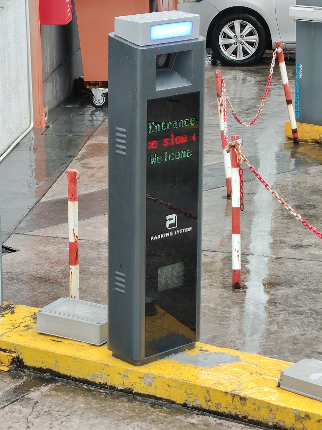

Installation, troubleshooting and after-sales support for local businesses. Recent service areas: Butterworth · Raja Uda · Prai / Perai · Juru · Berapit · Bukit Mertajam · Bayan Lepas · Kebun Bunga · Permatang Tinggi · Batu Maung · Sungai Petani and nearby areas.

ANPR & PARKING ACCESS CONTROL · PAYA TERUBONG
ANPR Parking System & Entrance Control – Paya Terubong, Penang
ANPR (Automatic Number Plate Recognition) parking system project featuring a vehicle entrance control terminal with LED information display, supporting automated vehicle access and parking management.
ANPR (Automatic Number Plate Recognition) installation works at a condominium vehicle entrance, including underground cable routing, floor hacking, conduit installation and concrete reinstatement for network connectivity with the barrier gate infrastructure.
CCTV INSTALLATION & TROUBLESHOOTING · BAGAN SERAI, PERAK
CCTV Installation & Troubleshooting – Bagan Serai, Perak
CCTV installation and troubleshooting involving surveillance cameras, network cabling and CCTV monitoring system connections to support reliable surveillance operation.
Network Troubleshooting & Connectivity Support – Paya Terubong, Penang
Troubleshooting of an existing condominium network system, including inspection of network switches, LAN cabling and connections to identify network connectivity issues.
IT INFRASTRUCTURE · CIDB DEVELOPER OFFICE · KEBUN BUNGA
IT Infrastructure Planning for Developer Site Office – Kebun Bunga, Penang
This is a new CIDB developer site office with 6 office cabins. We visited the site first to understand how the cabins will be used, the network requirements and how the different office areas need to stay connected.
We prepared the IT infrastructure plan covering 2× UNIFI Internet, dual-WAN firewall/router, server rack, server/NAS, core PoE switching, network cabling between the 6 cabins and Wi-Fi AP coverage, then proposed the solution and arranged the installation schedule.
After installation and testing, the project is covered by 1-Year Remote Technical Support.
CCTV Installation & Support – Multiple Penang Locations
Locations: Permatang Tinggi · Raja Uda · Berapit · Batu Maung
IP, analog and Wi-Fi CCTV installation, upgrade, repair and troubleshooting. Camera type and coverage are selected according to each business site and operational requirement.
Every business site is different. Mobit Solution recommends equipment and installation methods based on the location, daily operation and practical budget—not a one-size-fits-all package.